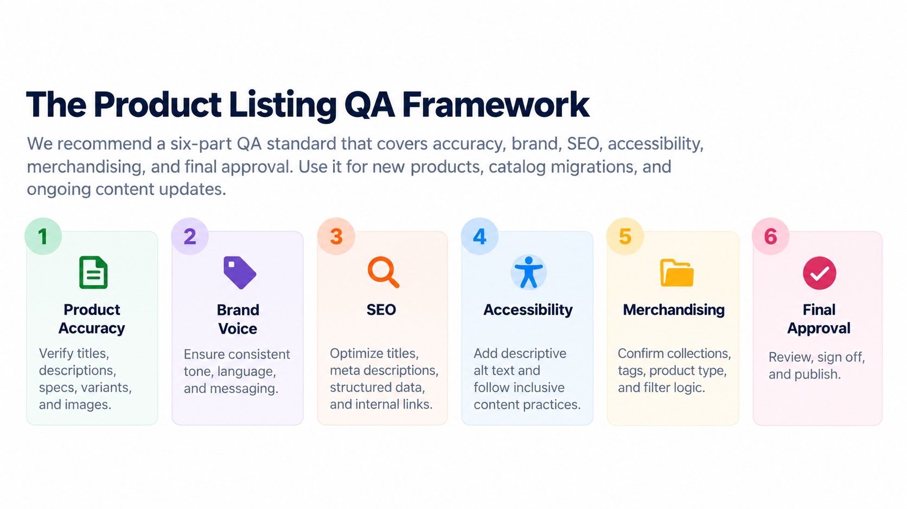
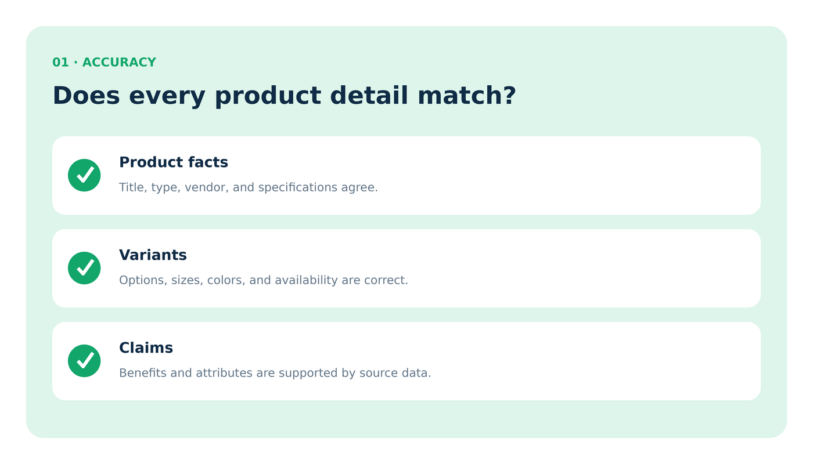
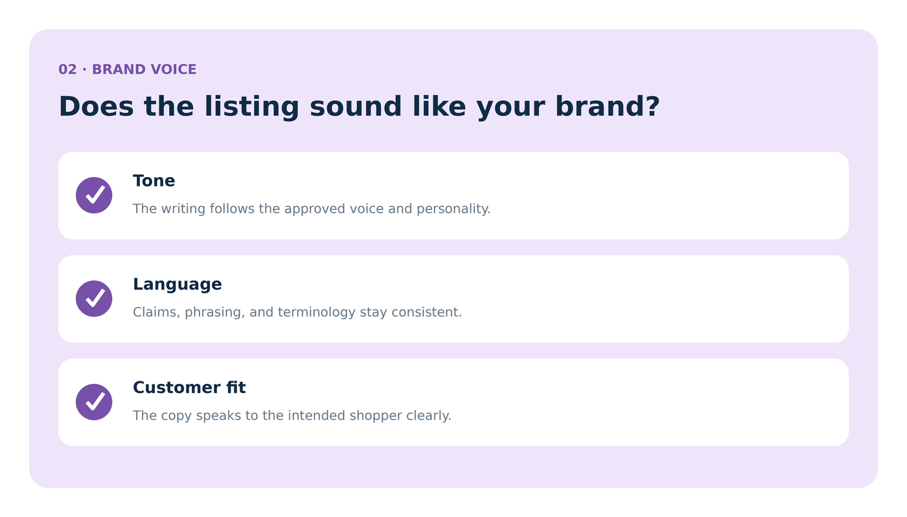
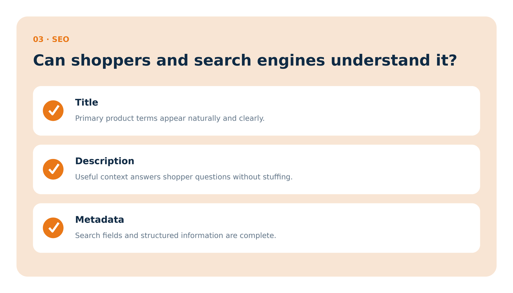
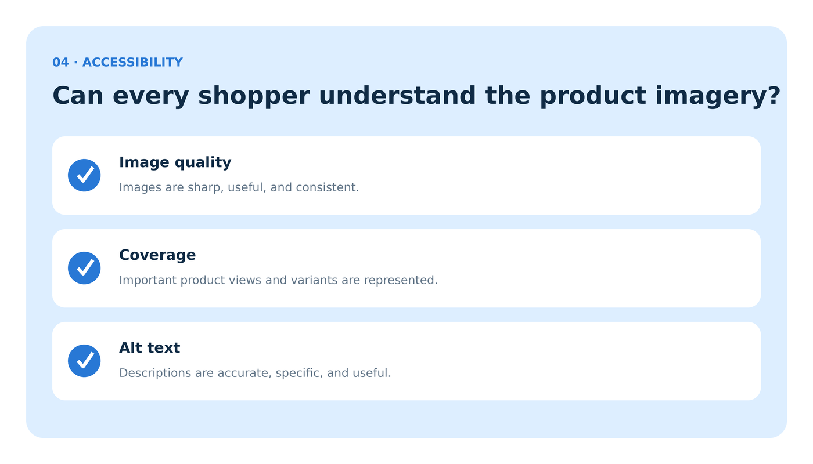
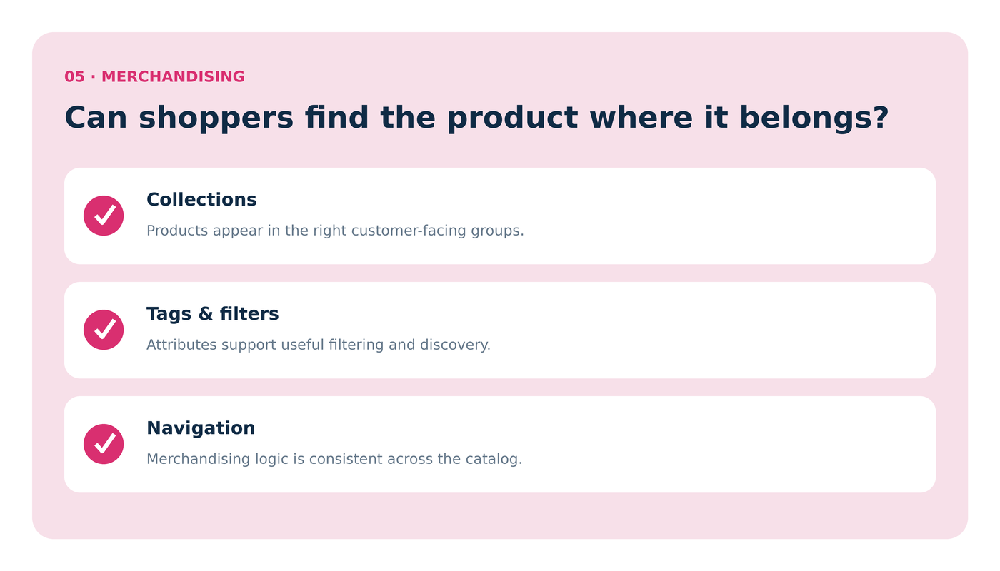
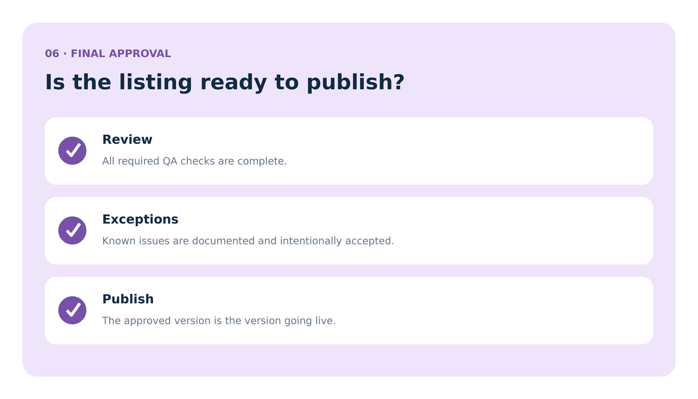

A product listing can be grammatically perfect and still be wrong.
The title can mismatch the variant. The description can drift off-brand. The images can be missing useful alt text. A collection assignment can send the product to the wrong place. SEO fields can be technically complete but still describe the wrong search intent.
That is why teams need a product listing QA standard, not just a final spellcheck.
Why a product listing QA standard matters
Product pages do a lot of work. They inform shoppers, support search visibility, help merchandising systems organize the catalog, and give internal teams a shared source of truth.
Without a clear QA process, teams often catch different problems at different times. One reviewer focuses on wording. Another notices SEO. Someone else fixes an image issue after the product is already live. A standard review sequence reduces that inconsistency.
The product listing QA framework

1. Product accuracy: make sure the listing is true
Accuracy is the first gate because every later improvement depends on it. Confirm that the listing reflects the actual product being sold.

| Check | Review for |
|---|---|
| Core facts | Title, vendor, product type, material, dimensions, specifications |
| Variants | Size, color, option names, SKU, availability, pricing |
| Claims | Benefits and attributes supported by source information |
| Assets | Images and video match the exact product or variant |
2. Brand voice: make sure it sounds like you
QA should catch more than typos. It should catch copy that sounds unlike the rest of the catalog, overstates benefits, or introduces inconsistent terminology.

3. SEO: make sure search context is clear
SEO QA is not a hunt for more keywords. It is a check that search-facing fields accurately describe the page and help shoppers understand what they will find.

Review page titles, meta descriptions, URLs, internal links, structured data, and whether the listing matches the intended search query. For broader search-intent strategy, see Long-Tail Keywords: The SEO Strategy Small Stores Can Actually Use.
4. Accessibility: make sure the content works for more people
Accessibility QA belongs inside the normal listing review, not in a separate cleanup project months later.

Check image quality, useful product views, alt text, headings, readable content structure, and whether visual information is also understandable without relying only on color or imagery.
5. Merchandising: make sure shoppers can find it
A correct product page can still be difficult to discover if the merchandising layer is wrong.

Confirm collection membership, product type, tags, filters, sort behavior, related products, and any featured-product logic. If taxonomy is inconsistent, fix that upstream rather than patching each product individually.
6. Final approval: review the finished system, not just the copy
The final reviewer should not be redoing every earlier step from scratch. They should confirm the required checks happened, known exceptions are documented, and the approved version is actually the version being published.

Turn the checklist into a team standard
The framework only works if the team uses the same definitions. Document what counts as complete, who owns each review layer, which issues block publishing, and which exceptions can be accepted.
| Define | Example |
|---|---|
| Owner | Who reviews accuracy, voice, SEO, accessibility, and merchandising |
| Blocking issue | Wrong variant, unsupported claim, broken image, missing required specification |
| Non-blocking issue | Optional enrichment or minor copy refinement |
| Approval evidence | Checklist, status change, reviewer sign-off, or workflow step |
Where penstack fits in
penstack helps keep product context, Brand Voice, review, and publishing connected in one workflow. That makes a QA standard easier to repeat because reviewers are working from the same product information and the same content state.
The takeaway
A good product listing QA standard checks more than writing. Review factual accuracy first, then voice, SEO, accessibility, merchandising, and final approval. The sequence matters because each layer depends on the one before it.
Make product QA repeatable.
Keep product context, Brand Voice, review, and publishing connected in penstack.